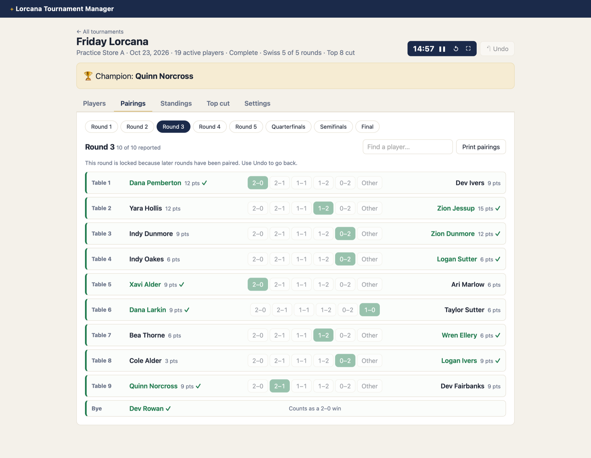
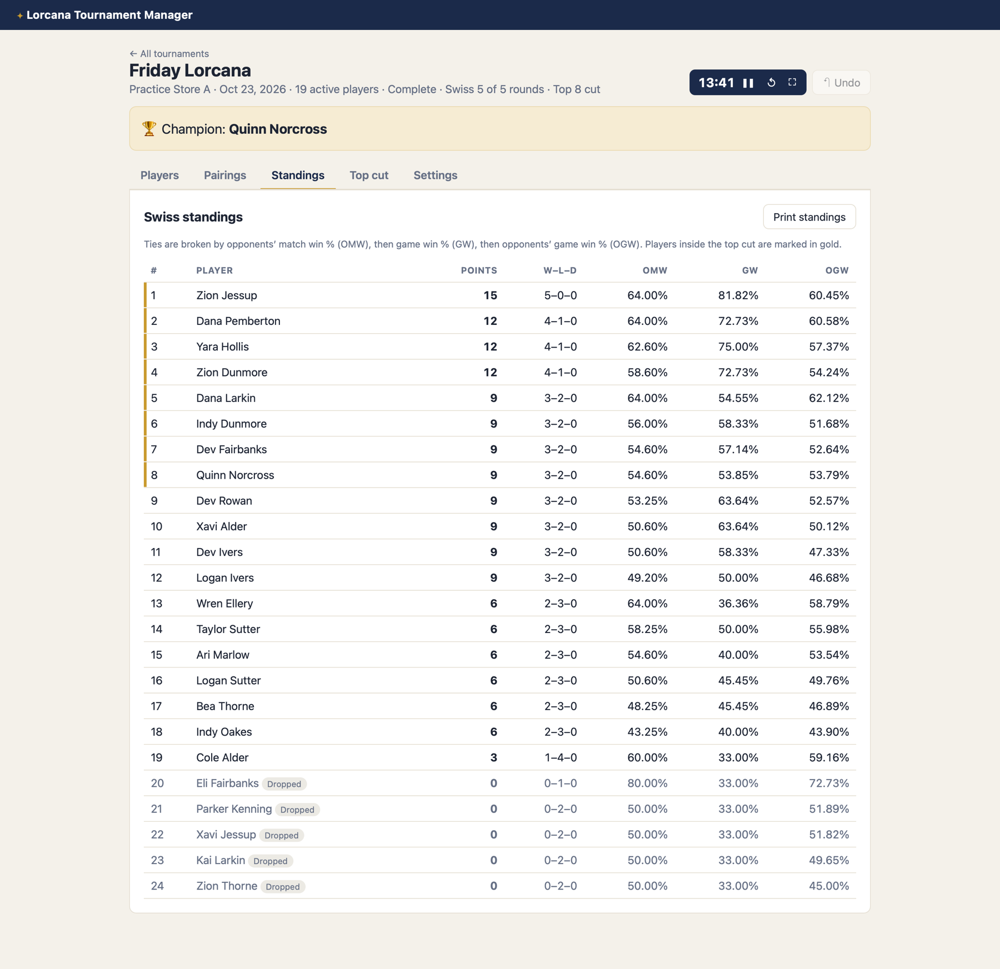
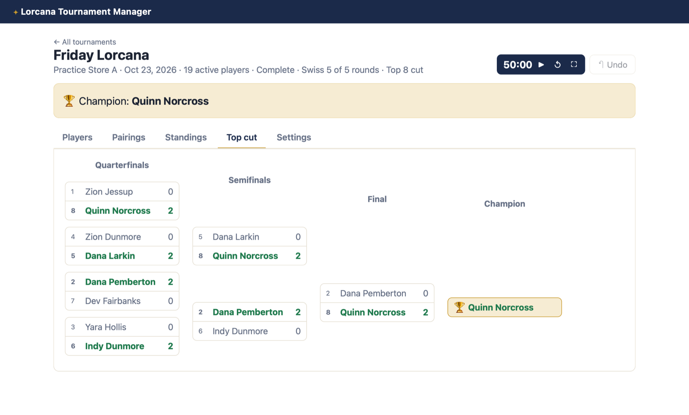
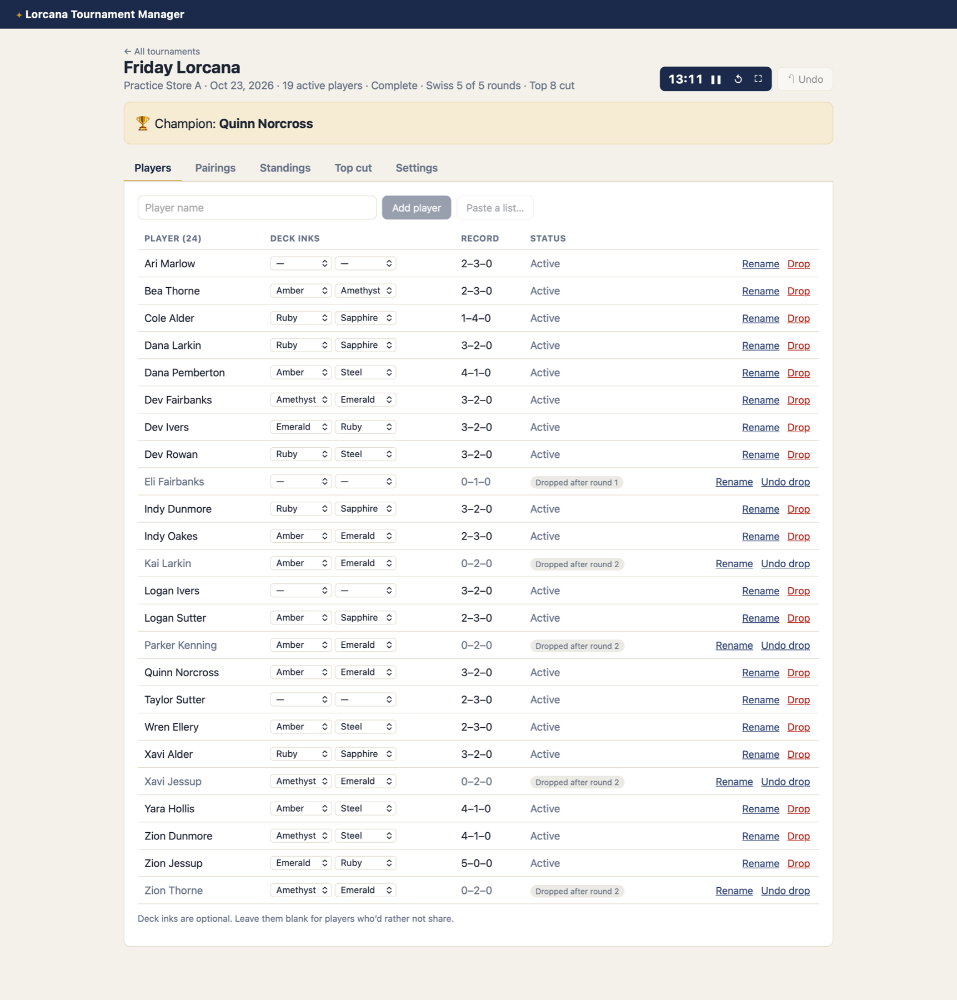
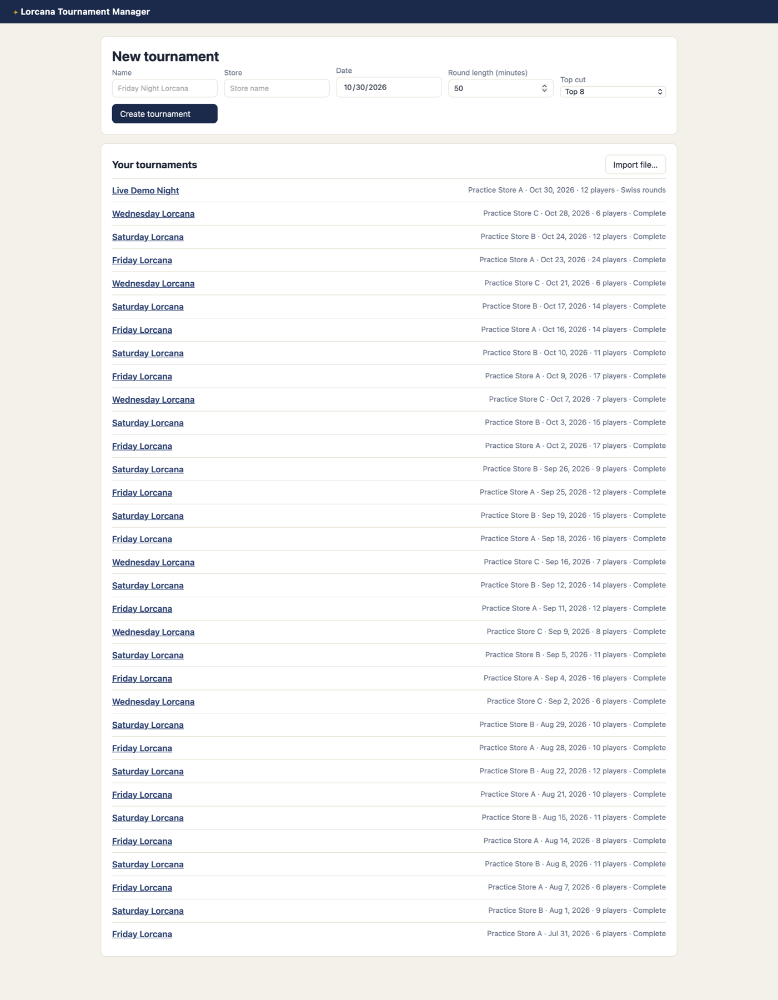
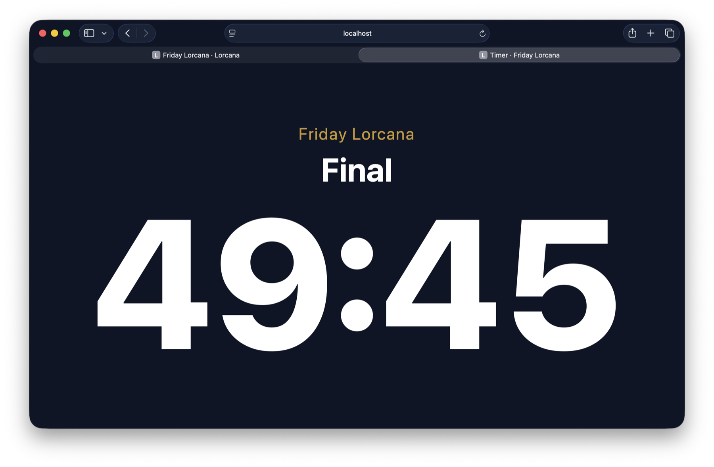

Lorcana Tournament Manager
A web app I'm building to run my own Disney Lorcana tournaments, from registration to champion, saving every event to a database for analysis.
Role
Product owner, business
analyst, developer
Tools
Python, SQLite, JavaScript,
Jira, GitHub, Claude
Status
v1 built and tested;
discovery and pilot next
Demo: starting round 1, entering best-of-3 results with one tap each, and checking standings (shown at 3× speed).
Screenshots and demo use fictional sample data: invented players at "Practice Store" events.
What it does
- Registration: add players one at a time or paste a list, record each deck's inks, and handle late arrivals and drops.
- Swiss pairings: players are paired with others on the same points, without rematches, and byes never go to the same player twice.
- Results: one tap per best-of-3 match; impossible scores are rejected.
- Standings: calculated automatically with standard tiebreakers (OMW%, GW%, OGW%).
- Top cut: a seeded Top 4, 8 or 16 bracket that advances to a champion.
- Round timer: a full-screen countdown for a projector, plus printable pairings and standings.
- Undo for every change, and export or import of a whole event.
Screens












How I built it
- Planned the work in Jira. Epics for the product, discovery, data, analytics and learning, with user stories written with Given/When/Then acceptance criteria.
- Built the rules engine in Python. Pairing, scoring, tiebreakers and the top cut live in one module with no web or database code, covered by 59 automated tests.
- Designed the database. A normalized SQLite schema (events, people, registrations, rounds, matches, inks) with constraints that reject impossible scores, plus an entity-relationship diagram.
- Prepared user discovery. A stakeholder map, interview guides for organizers and players, a player survey and an event observation sheet for measuring time between rounds, to gather requirements from local store organizers and players, whose experience running events will shape the app. Interviews are next.
- Generated sample data. A simulator creates realistic fictional events for demos and for practicing SQL and Tableau before real event data exists.
- Worked with AI. I used Claude, Anthropic's AI assistant, throughout the project: planning, writing and testing the code, designing the database and building this page.
What's next
Interviews with local store organizers and players and timing a store event as a baseline, then using the app at my own tournaments to measure whether it shortens the wait between rounds. After that: Tableau dashboards of attendance and deck trends, and letting players check pairings on their phones.